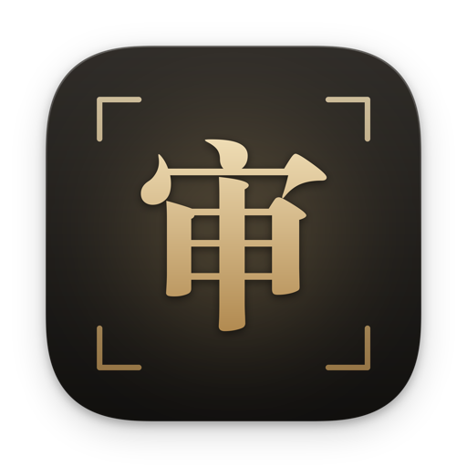
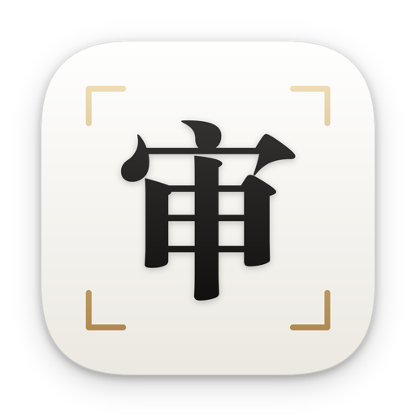
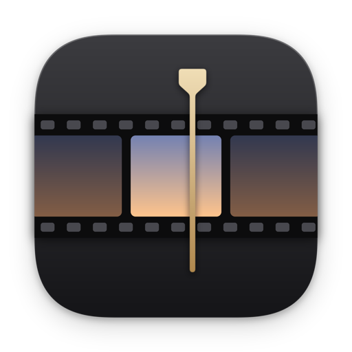
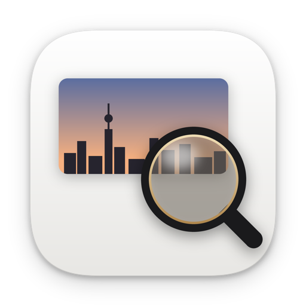

现在装的是 A 「审」印。想换的话，用对应的名字重新构建，例如 SHENPIAN_ICON=paper app/build.sh --install，或者改 make_icon.py 里的 DEFAULT。每个方案都在浅色和深色 Dock 上，按 128 / 64 / 32 / 16 像素展示。

seal现在用这个暖墨黑底，宋体粗「审」字配香槟金渐变，四角是细取景框。和封面的宋体加香槟金是同一套气质；一个字，缩到 32 像素也认得出来。

paperA 的反色版：瓷白底，墨黑「审」字，香槟金四角。更亮、更轻，和明亮风格的 app 界面更搭；但在浅色 Dock 上没有 A 那么醒目。

film石墨底，一条胶片，中间那格是外滩日出的颜色，一根香槟金播放头压在上面。最像剪辑软件，但 32 像素以下就看不清了。
finder瓷白底，粗黑取景框，中间一个香槟金播放三角。现在那个白底图标的精致版：干净，但比较像相机或扫码类 app。

loupe白底，一张黄昏天际线的画面，上面压一个金边放大镜，意思是「细看」。比较好懂，但元素多，缩小后最乱。